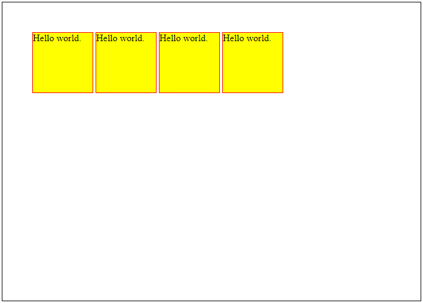

Web Development
Les 2 - CSS
Inhoud
- Html
- Opdrachten bespreken
- CSS - Verdieping
- Responsive Webdesign
- Opdracht RWD bespreken (11.45)
HTML - terugblik
- HTML-elementen bestaan uit tags
- Attributen staan alleen in de start-tag
- Alle tags worden gesloten*
- Styling gebeurt in een CSS-bestand
<!DOCTYPE html>
<html lang="en">
<body>
<img src="img/formatting.png"
alt="formatting example">
<a href="index.html">
Home
</a>
</body>
</html>
HTML - Styling guide
- Gebruik kleine letters voor element-namen
- Gebruik kleine letters voor attributen
- Omsluit attribuutwaardes met quotes
- Sluit alle HTML-elementen
- Zorg voor niet te lange code-regels.
- Gebruik html, head, title en body elementen
- Gebruik kleine letters voor bestandsnamen
<HTML LANG=EN>
<HEAD>
<TITLE>IEHL</TITLE>
</HEAD>
<BODY>
<P>Dit voelt als 1995!</P>
</BODY>
</HTML>
<div class=header>
<p id=boldheader>Spice Girls</p>
<p id=headertext>Welkom op mijn Spice Grils fanpage</p>
<p id=headertext>Laat een berichtje achter in
mijn gastenboek!</p>
</div>
HTML - Styling guide voorbeelden
<body>
<h1>Famous Cities</h1>
<h2>Tokyo</h2>
<p>Tokyo is the capital of Japan,
the center of the Greater Tokyo Area,
and the most populous metropolitan
area in the world.
</p>
</body>
<body>
<h1>Famous Cities</h1>
<h2>Tokyo</h2>
<p>
Tokyo is the capital of Japan,
the center of the Greater Tokyo Area,
and the most populous metropolitan
area in the world.
</p>
</body>
Opdrachten bespreken
Dingen die mij opvielen
- Er is maar drie keer code gepusht
- Kwaliteit van gepushte werk was goed.
Vragen?
CSS - Verdieping
- Box model
- Block vs. Inline
- Pseudo-classes
- Pseudo-element
Box model

Block, inline-block & inline
- display: block
- display: inline-block
- display: inline
Voorbeeld - opzet
<body>
<span class="ex">Hello world.</span>
<span class="ex">Hello world.</span>
<span class="ex">Hello world.</span>
<span class="ex">Hello world.</span>
</body>
.ex {
display: inline;
background-color:yellow;
height:100px;
width:100px;
border: 1px solid #f00;
}
Voorbeeld - inline

Voorbeeld - inline-block
Voorbeeld - block

Pseudo-class
selector:pseudo-class {
property: value;
}
/* onbezochte link */
a:link {
color: #ff0000;
}
/* visited link */
a:visited {
color: #00ff00;
}
/* mouse-over (hover) link */
a:hover {
color: #ff00ff;
}
/* Geselecteerde link */
a:active {
color: #0000ff;
}
Pseudo-element
selector::pseudo-element {
property: value;
}
p::first-letter {
color: #0000ff;
font-size: xx-large;
}
Responsive webdesign
- Tips
- Viewport
- Media Queries
- Opdracht
Tips
- Gebruik de viewport
- Gebruik Media Queries
- Gebruik percentages
- Wees voorzichtig met absolute positioning
- Begin met ontwikkelen voor het kleinste scherm
Viewport (1)


Viewport (2)
<meta name="viewport" content="width=device-width, initial-scale=1.0">
- width=device-width zorgt ervoor dat de breedte van het scherm wordt gevolgd.
- initial-scale=1.0 zet de initiële zoom.
Media queries
@media only screen and (max-width: 600px) {
body {
background-color: lightblue;
}
div.example {
display: none;
}
}
@media only screen and (min-width: 600px) {
div.example {
font-size: 80px;
}
}
@media only screen and (min-width: 768px) {
div.example {
font-size: 120px;
}
}
Opdracht
- https://github.com/nstuivenbergnovi/responsive
- Maak de website responsive
- Laat de menu items onder elkaar komen
- Laat onder de 600px de footer niet zien
- Maak de achtergrond wit in landscape mode.
- Opdrachten staan ook in de website.
- Te makkelijk? Gebruik CSS-grids
Oefenen met positioning
Facultatieve opdracht: https://classroom.github.com/a/CPzQGdlH
Vragen?
- HTML
- CSS
- Deze les
Huiswerk
- Maandag (29-06)
- Lees Webontwikkeling H15 - H18
- Woensdag (01-07)
- Lees Webontwikkeling H19 - H22
- Donderdag (02-07)
- Lees cursus UX/UI